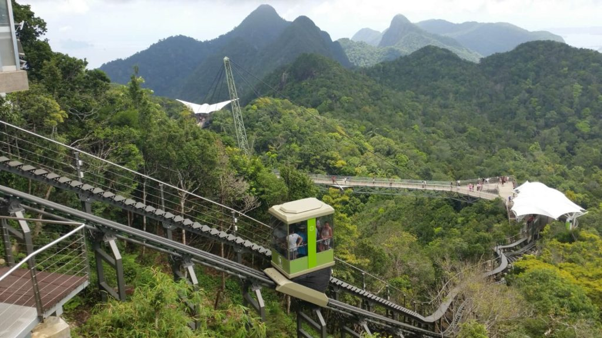

Where roads
end lifts
begin.
Self-propelled cabin systems for terrain where conventional infrastructure is not feasible.
Turn inaccessible terrain
into operational space.
The Outdoor Lift is CDC's vertical transport system: a self-propelled cabin that installs on hillsides without excavation, cable, or machine room. Designed for hotels, resorts, tourist attractions, and urban transit across slopes where funiculars and conventional elevators cannot go.
The terrain that blocked development becomes operational area. Hillside accommodation, tourist attractions, and transit routes that serve communities, without funicular-grade excavation costs.

Installed worldwide


Built around three principles
Ecology
No excavation, no concrete foundations, no environmental permits to fight. The landscape stays intact. Your project installs in weeks without removing a single tree or disturbing the site.
Functionality
Curves around terrain features, handles changing inclines, scales from a private residence to a public transit route. Each system is engineered for your specific site, not adapted to it.
Safety
Redundant braking and continuous remote diagnostics. Backup power for uninterrupted operation, integrated emergency communication, and engineering to the applicable national passenger transport standards for each project country.
The lift that goes
around the mountain.
Driven by a ball-chain mechanism, the Outdoor Lift navigates around trees, rocky outcrops, and hillside features without excavation. The self-propelled cabin carries all drive components onboard: no engine room, no machine house, no fixed straight line.
- Simultaneous change of direction and incline on a single track
- Multiple intermediate stops along the route
- Wheelchair accessible entrances as standard
- Real-time remote diagnostics and monitoring
- No pulling rope: continuous drive enables long, winding routes

Built for five applications
A single system, scaled to the project. From private hillside homes to high-volume public transit. Also used for agricultural access, industrial cargo, and resort logistics where wheeled vehicles cannot reach.

Safety is not
a feature. It is
the foundation.
Every Outdoor Lift system is engineered with independent fail-safe mechanisms: redundant braking systems that engage automatically, continuous real-time monitoring, and on-board diagnostics. Backup power ensures uninterrupted operation in all conditions; integrated emergency communication is standard on every cabin. CDC engineers each installation to the applicable national passenger transport standards for the project country.
Let's design
the future together.
Our engineers will define the right configuration for your site and provide a preliminary cost model, at no obligation.
Talk to the CDC team